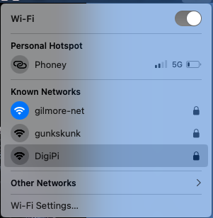
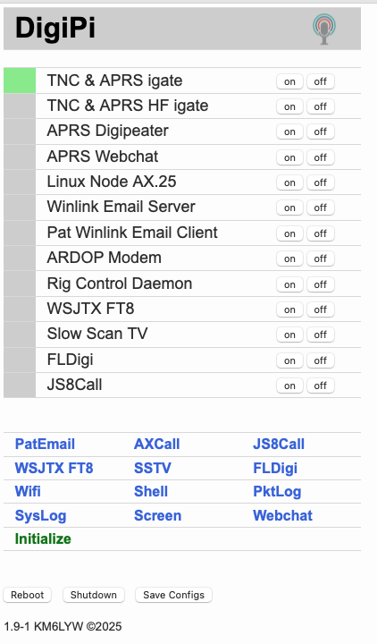
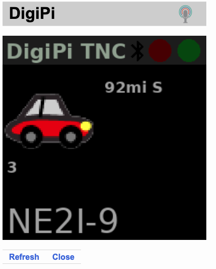
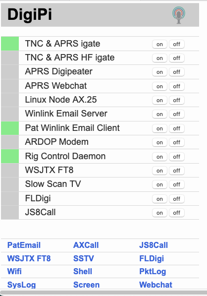
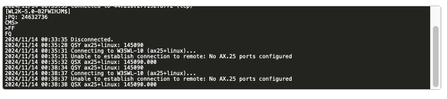
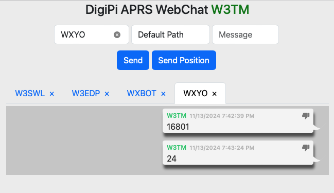
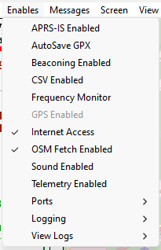
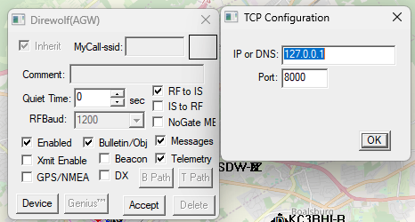
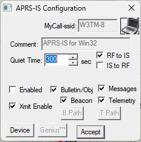

Icom IC-705
This chapter describes some specific steps used with the IC-705.
Manuals
PDF versions of the manuals can be found here:
Digital/Packet modes
DigiPi
As of 2024-11-13, I have been testing a Raspberry Pi Zero 2W running DigiPi 1.91.
Here is the initial configuration procedure:
- Flash the software on a microSD card.
- Install the microSD card into the Pi.
- Connect the Pi to power via the USB micro port farthest from the microSD card.
- When the Pi boots, it will create a DigiPi hotspot.

- Open a browser and visit http://10.0.0.5/wifi.php
- Enter your wifi credentials and save them.
- Reboot the Pi.
- After the Pi reboots, open a configuration panel by visiting http://digipi.local/.

- Complete parameters, especially Callsign, Winlink Password, APRS passcode, Grid Square, Latitude and Longitude (thanks https://grid.radio). For IC-705 via USB, select USB-Connected Radio for Radio Interface. The default parameters (Rig number 3085; Device file ttyACM0, and Baud rate 115200) work well.
- Press the initialize button, and then the Reboot button to save the changes and reboot the Pi.
- After the Pi reboots, visit http://digipi.local/.
- Click on the Screen item below the list of services.

- Tune the rig to an APRS frequency (e.g., 144.390 MHz). When you hear packets, you should see callsigns in the window.
- To test Winlink, turn the Pat Winlink Email Client on. The Pat Winlink Email indicator should turn green and so should the Rig Control Daemon.

- Click on the Pat Email link. The Pat mailbox opens.
- Click on the Ready indicator to the right of your callsign.
- A Connect to remote node… window will open.
- Select “Telnet” for the transport: protocol. Monitor the console to confirm that the DigiPi connected to the default telnet (internet) Winlink server.
I tried connecting to W3SWL-10 on 145.090 MHz using the AX.25 transport protocol.
I got the following error message at the console:

It worked when I started the Linux Node AX.25 service AND the Pat Winlink Email Client.
- To test APRS Web Chat, click on Webchat. This will open a DigiPi APRS WebChat window.
- Get a weather forecast by messaging WXYO with the message 24 (for 24 hours). Or send your zip code to WXBOT.
- Here are some other bots to try: WHO-IS ISS CQSVR ANSRVR EMAIL WXBOT

Winlink/VARA
- Connect the Evolve III laptop via USB. If using the MacBook Pro, connect the rig, start Parallels and log in to Windows 11.
- Turn the IC-705 on ([POWER]).
- Select the APRS/Packet Memory Group (04) on the IC-705.
- Press MEMO on the touchscreen, then GROUP.
- Rotate the MULTI knob to ‘04: APRS/Packet’.
- Press the highlighted row ‘04: APRS/Packet’.
- Use the MULTI knob to tune to 145.090 MHz (the frequency for the W3SWL-10 Winlink node).
- Check whether the VHF Packet Preset Memory is in use
- [MENU]/PRESET.
- Use the MULTI knob to select ‘4: VHF Packet’.
- If ‘4: VHF Packet’ is loaded, press UNLOAD.
- Start Winlink on the PC.
- Open the VARA FM connector.
Here are the settings for the VARA FM modem:
Under Settings/VARA Setup:
Use defaults, but add W3TM and the W3TM Registration Key under VARA Licenses.
Under Settings/SoundCard:
Device Input: Microphone (n- USB Audio CODEC
Device Output: Speakers (n- USB Audio CODEC
Note: the n above depends on the specific machine.
Under Settings/PTT:
PTT Via: CAT
Brand: Icom
Model: IC-705
Port : COM3 for Windows 11 under Parallels on MacBook Pro
Bauds: 19200
RTS : not selected
DTR : not selected
CI-V Address: A4
- Start the connection by clicking on Start in the Vara FM Winlink Session window.
Here are some Winlink VARA FM Session-specific parameters:
Under Settings/Vara FM Setup
Keep the defaults, but make sure to select
Automatically launch Vara FM TNC when session is opened
Show VARA FM TNC screen when it’s launched
The latter is optional, but gives additional feedback about what’s happening.
- When finished, close the connection by closing the VARA FM Winlink Session window.
Packet radio
- Start with the IC-705 off, especially if you are using the MacBookPro and Parallels.
- Connect the Evolve III laptop via USB. If using the MacBook Pro, connect the rig, start Parallels and log in to Windows 11.
- Select the APRS/Packet Memory Group on the rig.
- Tune to 145.030 MHz (W3YA-1 and W3PHB-1 packet nodes).
- Check whether the VHF Packet Preset Memory is in use (Menu/Preset). If it is not, load it.
The VHF Packet preset primarily changes the radio’s CI-V port from the default for the IC-705 (A4) to 94, the value used for the IC-7300. The SoundModem application recognizes the IC-7300 CI-V value, but not the IC-705.
- Launch SoundModem on the PC.
- Monitor the waterfall and the SoundModem window. After a few minutes, there should be packets appearing in the application window.
Here are settings for the SoundModemn application:
Sound Card
Output device: USB Audio CODEC
Input device: USB Audio CODEC
PTT Port
Select PTT port: CAT
Then under Advanced PTT Settings
Radio: IC7300 COM port: COM3 for Windows 11 on Parallels via MacBook Pro
Baudrate: 19200
Data bits: 8
Parity: None
Stop bits: 1
DTR: Off
RTS: Off
Direwolf APRS
Evolve III laptop
- Connect the Evolve III laptop via USB. If using the MacBook Pro, connect the rig, start Parallels and log in to Windows 11.
- Select the APRS/Packet Memory Group on the rig.
- Tune to 144.390 MHz.
- Check whether the VHF Packet Preset Memory is in use (Menu/Preset). If it is unload it.
- Open the Direwolf configuration file and check that the settings are appropriate for the IC-705.
MacBook Pro (running Parallels)
Since I run a receive-only I-Gate that transmits received packets to APRS-IS already, I do not typically enable APRS-IS digipeating or beaconing on the IC-705/MacBook Pro set-up from my home office.
This means that the station can usually only hear received RF packets, and does not transmit via RF or forward received packets via the Internet to APRS.IS.
As a result, most of the APRS digipeater parameters in direwolf.conf are commented out.
Also, if I’m using APRSIS32 to view packets, I disable ‘APRS-IS Enabled’ and ‘Beaconing Enabled’ under the Enables menu:

- Start Parallels (Windows 11).
- Select the APRS/Packet Memory Group (04) on the IC-705.
- Tune to 144.390 MHz; FM-D mode.
- Check whether the VHF Packet Preset Memory is in use (Menu/Preset). If it is unload it.
- Open the Direwolf configuration file and check that the settings are appropriate for the IC-705.
These parameters are the minimum needed for a receive only station (no IGate, no APRS-IS, no beaconing):
ADEVICE USB 0 0
AGWPORT 8000
KISSPORT 8001To IGate heard packets to APRS-IS, we need the following:
MYCALL W3TM-<SSID>
IGSERVER noam.aprs2.net
IGLOGIN W3TM-<SSID> <APRS-pascode>To beacon via RF, we need the following:
PTT COM4 RTS
PBEACON delay=1 every=30 overlay=S symbol="dot" lat=40^47.87N long=077^30.95W power=10 height=10 gain=1 comment="State College PA" via=WIDE1-1To digipeat heard packets, we set the following:
#DIGIPEAT 0 0 ^WIDE[3-7]-[1-7]$|^TEST$ ^WIDE[12]-[12]$- Start Direwolf (
This PC\Local Disk(C:)\direwolf-1.7.0-9807304-_i686)
The following start-up text should be shown in the Direwolf window.
Dire Wolf version 1.7
Includes optional support for: cm108-ptt
Reading config file direwolf.conf
Available audio input devices for receive (*=selected):
* 0: Microphone (3- USB Audio CODEC (channel 0)
1: Microphone (High Definition Aud
Available audio output devices for transmit (*=selected):
* 0: Speakers (3- USB Audio CODEC ) (channel 0)
1: Speakers (High Definition Audio
Channel 0: 1200 baud, AFSK 1200 & 2200 Hz, A+, 44100 sample rate.
Note: PTT not configured for channel 0. (Ignore this if using VOX.)
Ready to accept AGW client application 0 on port 8000 ...
Ready to accept KISS TCP client application 0 on port 8001 ...Adjust the Sound/Mic levels so that the strongest signals have audio level = 50 or so.
With the IC-705 setting as follows:
‘Menu/Set/Connectors/MOD Input/USB MOD Level’ = 70%
Setting the virtual PC mic level to ~80 seems to work well.
- Launch APRSIS-32
Here are the parameters for the Direwolf port using the AGW engine:
 And here are the parameters for the APRS-IS port:

Note: This port is disabled under the current scheme.
Local VHF/UHF phone operations
- Select the Centre Repeaters memory group.
- Check whether the VHF Packet Preset Memory is in use (Menu/Preset). If it is unload it.
- Verify that the radio is in FM mode, not FM-D mode. In FM-D mode, audio input is accepted only via USB (see below).
- Open the audio scope (Menu/Audio) to monitor output audio.
- Choose the repeater you wish to use and make a test transmission.
If needed, check the connectors settings (Menu/Set/Connectors/MOD Input):
DATA OFF MOD: MIC, USB
DATA MOD: USB
HF phone operations
The loop antenna is receive-only. Do not transmit on HF unless you have changed to a transmit antenna.